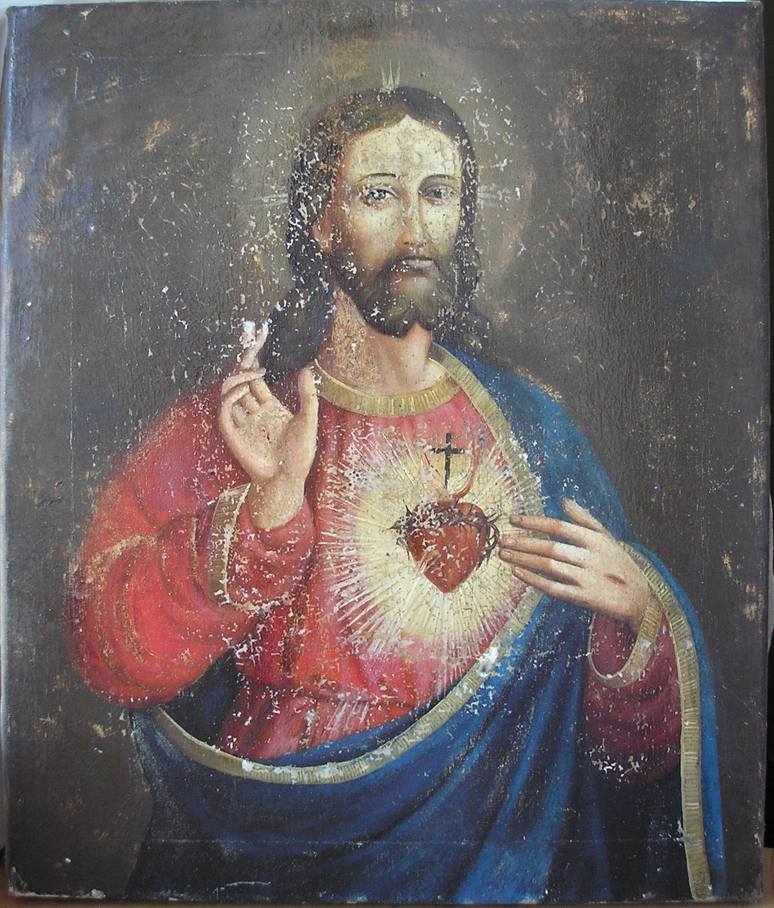
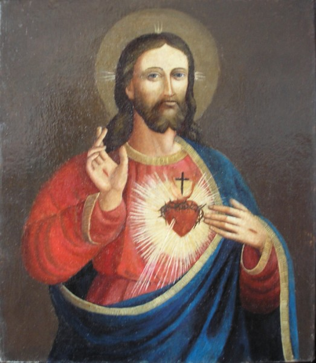
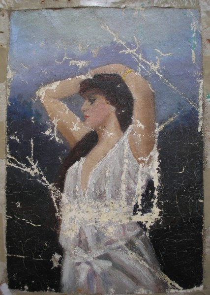
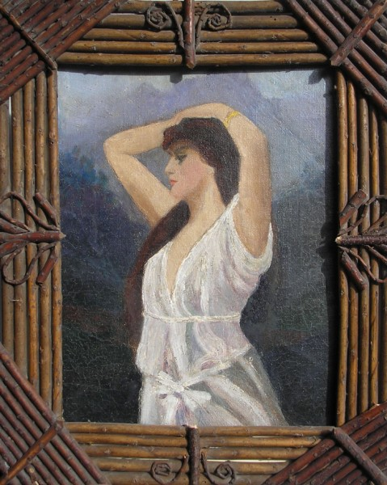
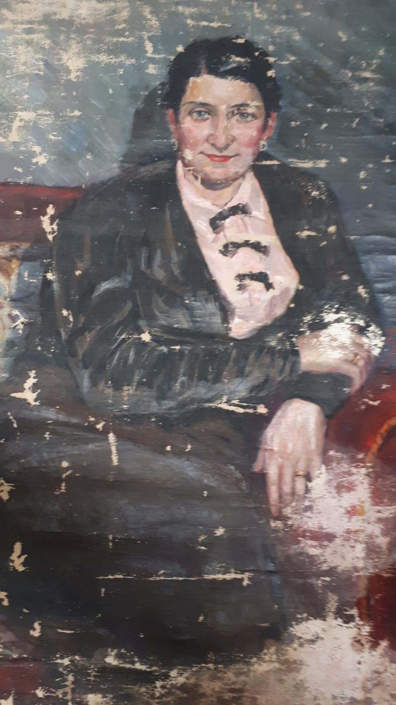
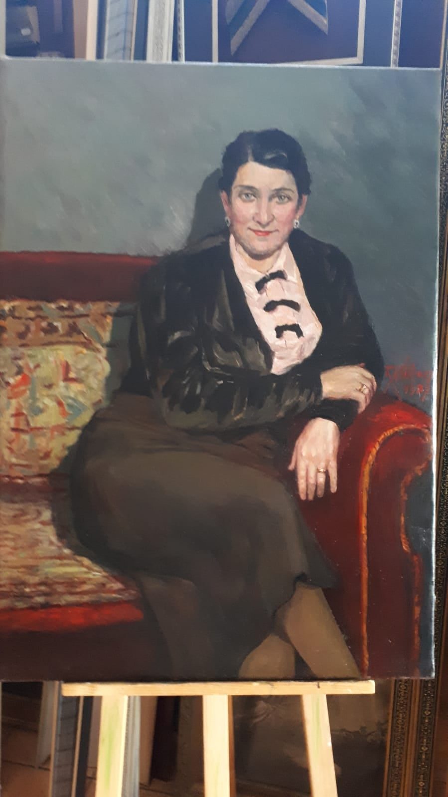
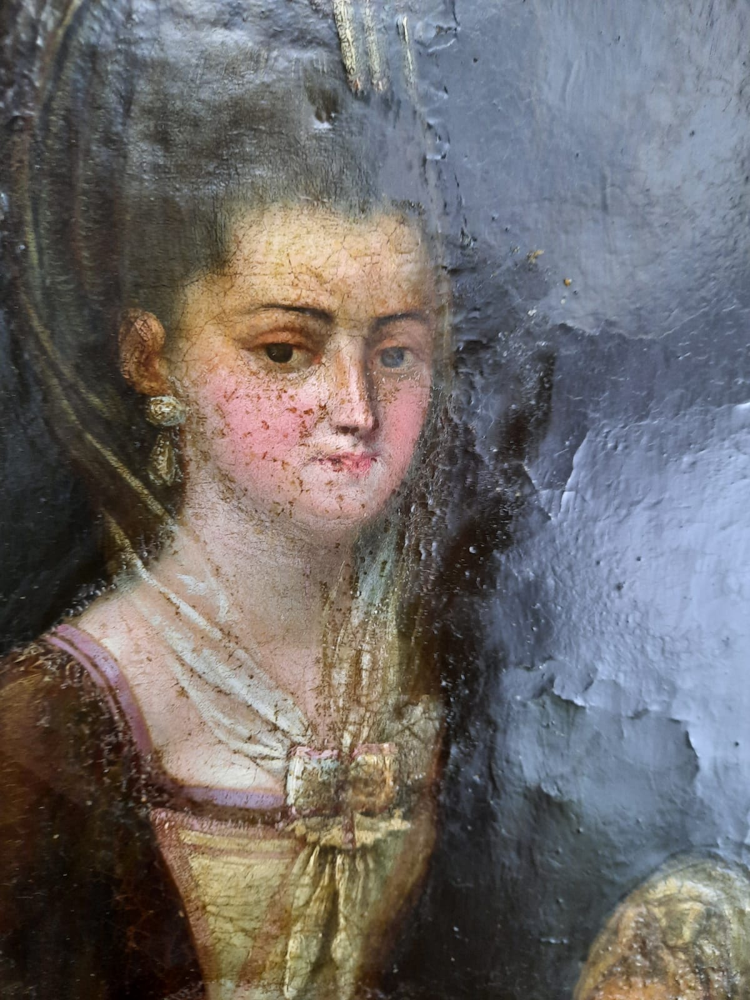
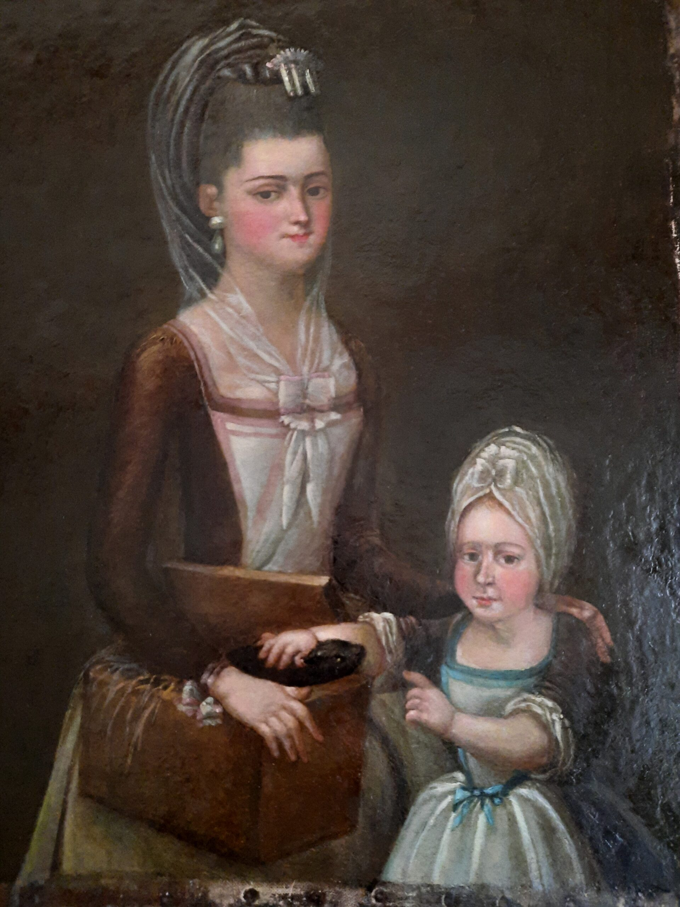
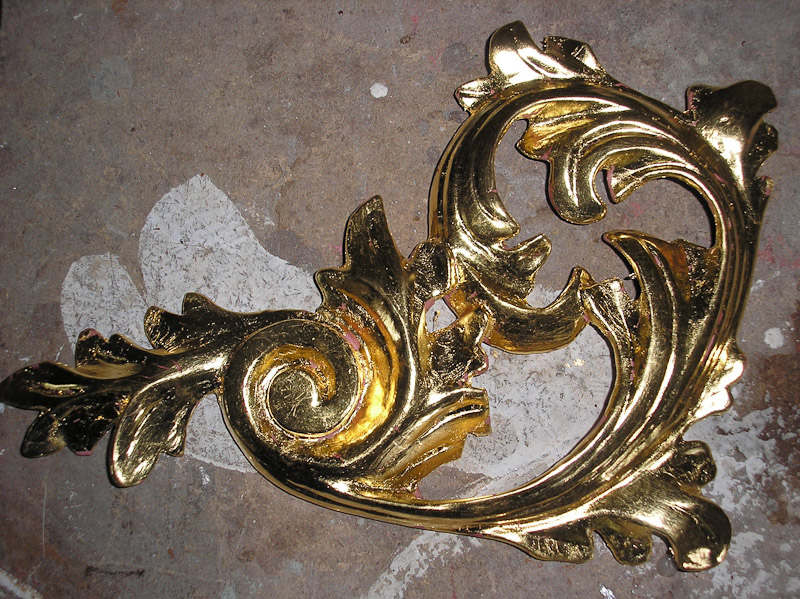

Zakres
Konserwacja malarstwa sztalugowego — olejnego, temperowego, akwarelowego. Czyszczenie, dublaż, uzupełnianie ubytków, retusz.
Konserwacja rzeźby drewnianej polichromowanej i złoconej. Wzmacnianie struktury, odtworzenie warstwy malarskiej.
Konserwacja i restauracja detali architektonicznych — sztukaterii, polichromii ściennej, elementów ołtarzy.
Etapy
Oceniam stan obiektu, dokumentuję uszkodzenia fotograficznie i opracowuję program prac konserwatorskich.
Na podstawie dokumentacji przygotowuję szczegółową wycenę oraz szacowany czas realizacji.
Przeprowadzam zabieg konserwatorski zgodnie z przyjętym programem, dokumentując każdy etap prac.
Przekazuję gotowy obiekt wraz z dokumentacją konserwatorską i zaleceniami dotyczącymi dalszej opieki.
Realizacje









Skontaktuj się — przeprowadzę wstępne oględziny i przygotuję wycenę.
Umów konsultację